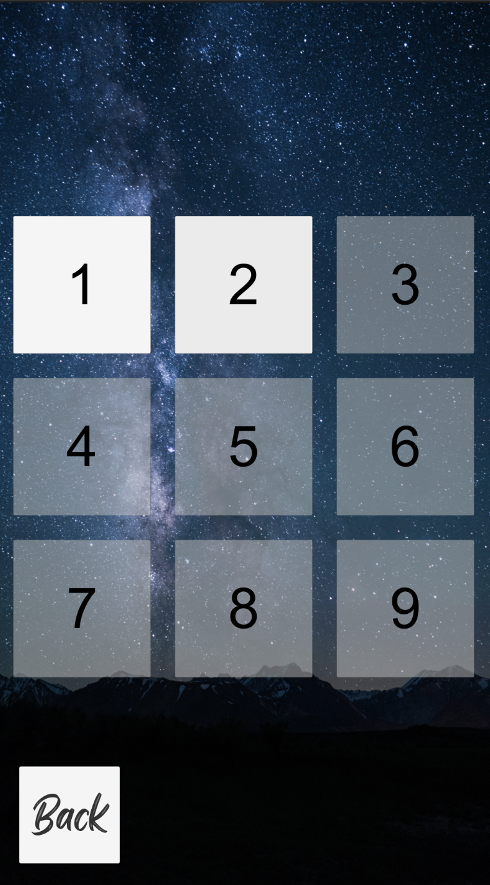
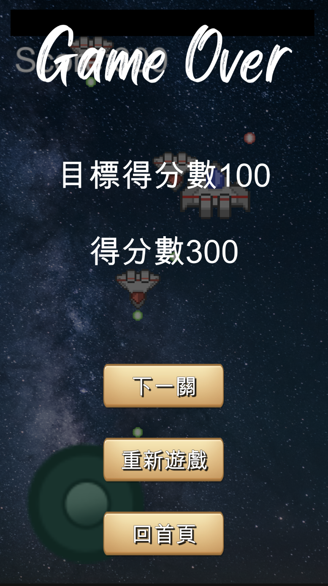
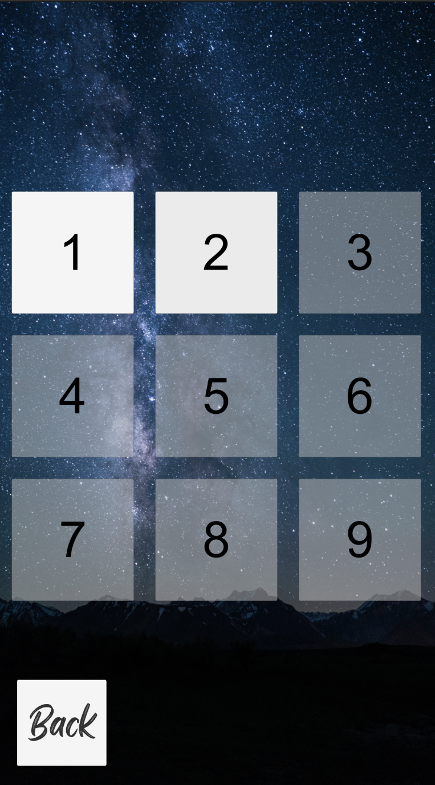
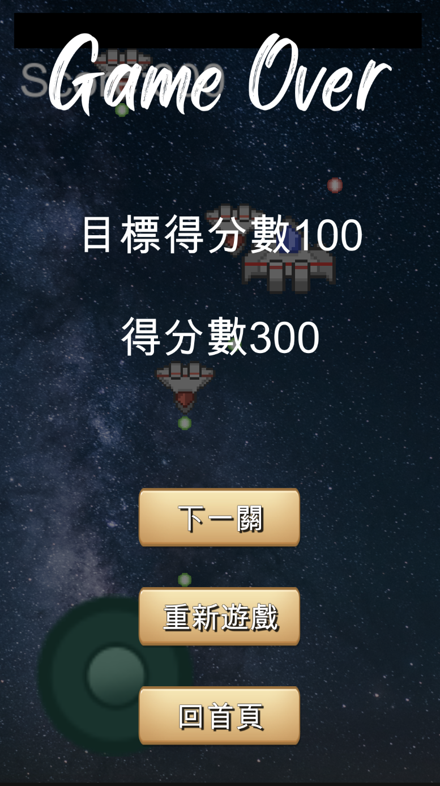

U
n
i
t
y

 



作品理念
這是大三上「手機遊戲程式設計」課程的課堂作業，主題和素材皆由教授提供，主要學習關卡設計和控制方式等。
作品介紹
·首頁
首頁有兩個動態按鈕：開始/離開。
·LOGO影片
播放公司形象影片。
·關卡
共有九關，第一關之後的關卡初始鎖定，只有過關時才能解鎖下一關。
·玩家
玩家滑動陀螺儀控制一艘戰鬥機，戰鬥機會自動發射砲彈。
·敵機
敵機將隨機生成並自動發射砲彈，若被玩家機射到會消滅。
·分數
每一關都有一個通關分數門檻，若打倒敵機可得分，被敵機打到會扣分，當分數到達門檻時才會解鎖下一關。
心得
之前的Unity專案沒有開發過手遊類的，所以這是我第一個完整的手遊專案。
覺得這當中最有收穫的是陀螺儀和解鎖關卡的部分，因為解鎖關卡使用到場景跟場景之間的資料傳送，讓我對於資料傳輸上面有了全新的認識，
陀螺儀則是跳脫了以往總是用鍵盤或滑鼠控制，而陀螺儀不止可以使用在手機上也可以使用在搖桿上，未來在遊戲開發上又多了更多的控制選擇。